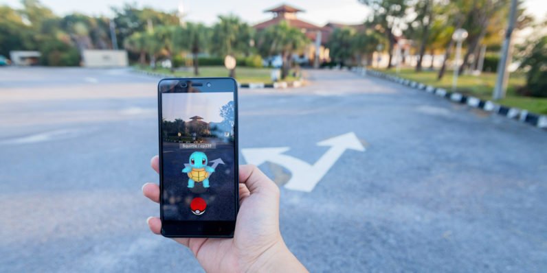
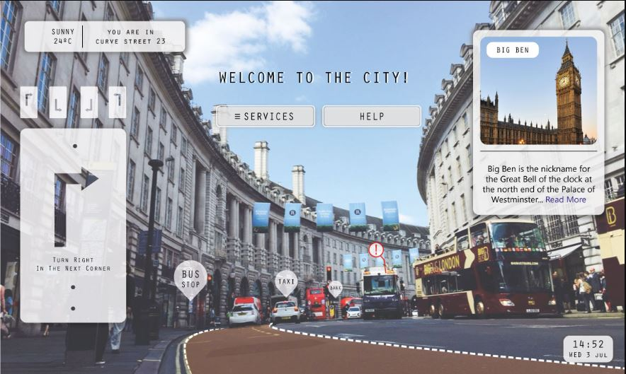

Augmented reality (AR) is used to enhance natural environments or situations and offer perceptually enriched experiences. With the help of advanced AR technologies (e.g. adding computer vision, incorporating AR cameras into smartphone applications and object recognition) the information about the surrounding real world of the user becomes interactive and digitally manipulated. Information about the environment and its objects is overlaid on the real world.
Social interaction
AR can be used to facilitate social interaction. An augmented reality social network framework called Talk2Me enables people to disseminate information and view others' advertised information in an augmented reality way. The timely and dynamic information sharing and viewing functionalities of Talk2Me help initiate conversations and make friends for users with people in physical proximity. However, use of an AR headset can inhibit the quality of an interaction between two people if one isn't wearing one if the headset becomes a distraction. two technologies used in augmented reality: diffractive waveguides and reflective waveguides.
School/Education
In 2013, a project was launched on Kickstarter to teach about electronics with an educational toy that allowed children to scan their circuit with an iPad and see the electric current flowing around. While some educational apps were available for AR by 2016, it was not broadly used. Apps that leverage augmented reality to aid learning included SkyView for studying astronomy,AR Circuits for building simple electric circuits, and SketchAr for drawing.
Video games
The gaming industry embraced AR technology. A number of games were developed for prepared indoor environments, such as AR air hockey, Titans of Space, collaborative combat against virtual enemies, and AR-enhanced pool table games.
Augmented reality allowed video game players to experience digital game play in a real-world environment. Niantic released the augmented reality mobile game Pokémon Go. Disney has partnered with Lenovo to create the augmented reality game Star Wars: Jedi Challenges that works with a Lenovo Mirage AR headset, a tracking sensor and a Lightsaber controller, scheduled to launch in December 2017.

Industrial design
AR allows industrial designers to experience a product's design and operation before completion. Volkswagen has used AR for comparing calculated and actual crash test imagery. AR has been used to visualize and modify car body structure and engine layout. It has also been used to compare digital mock-ups with physical mock-ups to find discrepancies between them.
Translation
AR systems such as Word Lens can interpret the foreign text on signs and menus and, in a user's augmented view, re-display the text in the user's language. Spoken words of a foreign language can be translated and displayed in a user's view as printed subtitles.
Tourism and sightseeing
Travelers may use AR to access real-time informational displays regarding a location, its features, and comments or content provided by previous visitors. Advanced AR applications include simulations of historical events, places, and objects rendered into the landscape.
AR applications linked to geographic locations present location information by audio, announcing features of interest at a particular site as they become visible to the user.
